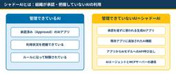
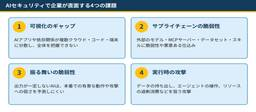

JBS Tech Blog
https://blog.jbs.co.jp/
JBS Tech Blogは、日本ビジネスシステムズ（JBS）の社員が分担して執筆を担当し、技術情報を発信しているブログです！Microsoft製品や生成AI関係の最新情報をはじめ、様々な製品やサービスの情報を幅広く公開しています。2022年3月より運用を開始し、営業日はほぼ毎日記事を公開しています。
フィード

AlmaLinuxにSquidをインストールして使ってみた -PART.4- ブラックリストによるアクセス制御編
JBS Tech Blog
前回の記事ではSquidに「ホワイトリストを用いたアクセス制御」の設定を入れました。 blog.jbs.co.jp 最終回となる本記事では、ブラックリストを使用し、Squidへ「特定のURLに対するアクセスを拒否」する設定を導入した上で、実際に設定が有効になっているかを検証します。 事前確認 HTTPアクセステスト HTTPSアクセステスト Squid設定 「blacklist.txt」の作成 「squid.conf」の設定変更 事後確認 まとめ 事前確認 前回のおさらいを兼ねて、現在Squidにどのような設定が入っているかを確認します。 Squidをインストールした検証用プロキシサーバー「y…
1日前
Azure Logic Appsの会話エージェントを使ってみた
JBS Tech Blog
本記事では、Azure Logic Appsの「会話型エージェント機能」を実際に触ってみた内容をもとに、その概要や仕組み、活用方法を解説します。具体例として、大阪・東京の天気を返す簡易的なエージェントを作成し、Tool（外部処理）の使い方やAIによる処理選択の流れを紹介します。
2日前
Google Workspace テンプレート登録方法
JBS Tech Blog
Google Workspace（GWS）を運用する中で、「社内で使う資料のフォーマットを統一したい」「ユーザーが資料を作成する際の負担を軽減したい」と感じる方も多いのではないでしょうか。 組織全体で作成文書の標準化を図る手段として非常に有効なのがテンプレート機能です。 Google Workspaceでは、テンプレートギャラリーを利用した組織内でのテンプレート共有に加え、カテゴリ管理や登録権限の制御、管理コンソールからの標準テーマ・テンプレート設定などの運用機能を利用できます。 本記事では、管理者視点から対応ツール、テンプレートの登録方法、カテゴリ管理、権限設定、管理コンソールによる標準テー…
2日前
刷新されたMicrosoft Copilot Studio — 新しいエージェント作成画面と主な新機能を整理する
JBS Tech Blog
Microsoft Copilot Studio（以下、Copilot Studio）が大きく刷新され、AIエージェントを作るための画面や仕組みが新しくなりました。 本記事は、Copilot Studio という名前は聞いたことがあっても、具体的に何ができて今回どう変わったのかはまだつかめていない、という方に向けた解説です。読み終えると、刷新の全体像と、新しくなった作成画面・主な新機能・課金の考え方をひととおり把握できます。専門的な前提知識は必要ありません。 この記事のポイントは次のとおりです。 Copilot Studio は、プログラミングを多く書かなくてもAIエージェントを作れるツールで…
3日前

React × OIDC のトークン保管方式：localStorage / Cookie / in-memory / Backend-For-Frontend の比較と選定基準
JBS Tech Blog
本記事では、React で OIDC (OpenID Connect) による認証を実装した際に、取得したトークンをどこに保管するかという設計上の選択について解説します。localStorage / JavaScript から読み取れる Cookie / in-memory / HttpOnly Cookie + BFF (Backend-For-Frontend) の4方式を、XSS 耐性と運用コストの観点で比較します。 React で SPA を開発した経験があり、OIDC のログイン自体は動作している状態の方を対象としており、Authorization Code Flow の実装手順その…
3日前
【Intune】共有PCモードのローカルストレージ制御設定のメリットとデメリット
JBS Tech Blog
共有PCモードのローカルストレージ制御は、情報セキュリティを強化し、運用の効率化を実現。一方でネットワーク環境整備などの課題もあり、メリットとデメリットを詳しく解説します。
4日前

シャドーAI対策の基本：Cisco AI Accessで生成AIを「禁止」から「安全に使わせる」へ
JBS Tech Blog
生成AIの業務利用が広がる一方で、「シャドーAI」への対策が多くの企業で課題になっています。 シャドーAIとは、会社が把握・許可していないAIサービスを、従業員が独自の判断で業務に使うことです。 悪意がなくても、機密情報や個人情報をプロンプトに入力して社外のAIへ送ってしまったり、どのAIがどれだけ使われているのかを管理者が把握できなくなったりするリスクがあります。 一方で、生成AIを一律に禁止すると業務の効率化の機会を失い、かえって隠れた利用を増やしてしまうおそれもあります。 本記事では、シャドーAIのリスクと対策の考え方を整理したうえで、Cisco Secure AccessのAI Acc…
5日前

API Management 経由で Codex・Claude Code を利用するためのクライアント設定- Azure を活用したコーディングエージェント基盤 連載第6回
JBS Tech Blog
Codex や Claude Code を API で利用する際の Windows でのクライアントの設定方法を紹介しています。CLI、VS Code 機能拡張、デスクトップアプリを扱っています。
5日前
AlmaLinuxにSquidをインストールして使ってみた -PART.3- ホワイトリストによるアクセス制御編
JBS Tech Blog
前回の記事ではSquidに「HTTPアクセス許可/HTTPアクセス拒否」の設定を入れました。 blog.jbs.co.jp 本記事ではSquidをインストールした検証用プロキシサーバー「yn-alma01」を検証用Windows Clientに設定し、Squidへ「ホワイトリストを用いて特定のURLにのみアクセス可能」という設定を導入した上で、設定が有効になっているかを検証します。 事前確認 Squid設定 「whitelist.txt」の作成 「squid.conf」の設定変更 事後確認 まとめ 事前確認 検証用の仮想Windows Client「yn-win10pc01」で事前確認を行いま…
5日前
Microsoft 365 ライセンスを切り替える方法【影響と対策編】
JBS Tech Blog
Microsoft 365 ライセンス切り替え作業後に発生する恐れがある影響と、事前に実施しておきたい対策についてまとめています。
6日前

Cisco AI Defenseとは？「作るAI」と「使うAI」の違いから考えるAIセキュリティ
JBS Tech Blog
AIエージェントの普及によって、AIセキュリティの重要性はさらに高まっています。 Cisco AI Defenseは、企業が開発・提供するAIアプリケーションやAIエージェントを対象に、AI資産の可視化、サプライチェーンを含む脆弱性評価、実行時防御を組み合わせるセキュリティ製品です。 一方で、従業員によるChatGPTなどの外部生成AI利用については、Cisco Secure AccessのAI Accessが可視化・制御を担います。 本記事では、Cisco AI Defenseを中心に、AI Accessとの役割分担も含めて解説します。 なぜ今、AIセキュリティが必要なのか 「作るAI」と「…
6日前

Power AutomateのTeams Webhookを使ってみた
JBS Tech Blog
通常、API経由でTeamsに通知をするのはMicrosoft Graph経由もしくはPower Automateのプレミアムコネクタなどが必要になります。ただ、簡単な処理をスクリプトで実行したいという場合はどちらもハードルが高いです。 このようなケースでは、Power AutomateのTeams Webhook機能を使えば、比較的簡単にTeams通知を行うことができます。 本記事では、Power AutomateのTeams Webhook機能を利用して、PowerShellスクリプトからTeamsにメッセージを投稿する方法をご紹介します。 必要なツール 前提知識 実行する手順 1. Po…
8日前
Teams Phone新機能「パーソナルアテンダント（Copilot Call Delegation）」を使ってみる
JBS Tech Blog
Teams PhoneとMicrosoft 365 Copilotを組み合わせた「パーソナルアテンダント（Copilot Call Delegation）」という注目の新機能が発表されたので、さっそく検証してみました。
9日前
Microsoft Purviewにおける秘密度ラベルの発行手順
JBS Tech Blog
「社外秘のファイルを誤って共有してしまった」「機密情報を含むメールが意図せず外部へ送信された」といった情報漏えいリスクは、多くの企業が抱える課題の一つです。 Microsoft Purview の秘密度ラベルを利用することで、ファイルやメールの重要度を分類することができます。また、暗号化やアクセス制御などの保護を自動的に適用できます。 前回の記事では、Microsoft Purview ポータルで秘密度ラベルを作成する手順について紹介しました。 ※秘密度ラベルの作成手順については下記の記事に記載しておりますので、必要に応じてご参照ください。 Microsoft Purview における秘密度ラ…
9日前
Google Meet録画の保持期間と保持方法
JBS Tech Blog
Google Meetでは、録画機能を利用することができます。また、録画データは会議後にGoogle Driveへ自動で保存されます。 その録画データがどの程度の期間保持されるのか、また保持期間を変更可能なのかについて確認しました。 本記事では、Googleの公式情報や、実際の管理画面などから得られた情報や、Google Workspaceサポート（以下GWSサポート）へ問い合わせた結果をまとめましたので、紹介します。 ※本記事は2026年8月時点の情報や回答を元に作成しています。 Meet録画の保持期間 3か月を超過する場合の保持方法 共有ドライブへ移動する ダウンロード後に再アップロードす…
9日前
アダプティブ カード デザイナーの使い方：その10 パーツの紹介（Input.ChoiceSet）
JBS Tech Blog
アダプティブ カード デザイナーにおける「Input.ChoiceSet」の使用方法をご紹介。選択肢の設定や表示スタイルについての解説付き。
10日前
【Microsoft Purview】PowerShellを使用した保持ラベル適用方法
JBS Tech Blog
組織では、業界の規制やセキュリティインシデント発生時のリスク軽減のため、以下のようなコンテンツ管理を求められるケースがあります。 契約書を7年間保持させる 特定のドキュメントは５年後に削除する Microsoft Purviewでは、これらの要件を実現するための機能として「保持ラベル」を提供しています。 保持ラベルを利用することで、Microsoft 365内のメールやドキュメントを「アイテム単位」で特定し、一定期間の保持（削除禁止）や自動削除を実施できます。 保持ラベルの適用方法は以下の3種類です。 手動適用 自動適用 PowerShellで適用 本記事では動作確認を行った一例として、Sha…
10日前
dotnet formatを利用したコーディングスタイルの統一
JBS Tech Blog
.NETで開発をしていると「usingの整理を手動でしている」「スタイルの指摘をレビューで繰り返している」といったことがありませんか？ そこで便利なのがdotnet formatです。これを利用することでスタイル統一を仕組み化し、修正やレビューの手間を減らすことが期待できます。 本記事では、.NET SDKに標準搭載されているdotnet formatを使って、C#のコーディングスタイルを自動で統一する方法を解説します。 dotnet formatとは 検証環境 .editorconfigの役割 1. 未使用のusingを削除する 2. using の並び順を統一 基本的な使い方 dotnet…
10日前
Microsoft Intune 管理センターを利用し、Windowsセキュリティ機能のトースト通知を非表示にする方法
JBS Tech Blog
Windows には、ウイルス対策やファイアウォールなどのセキュリティ機能が標準で組み込まれています。これらの機能が何かを検知したり動作をブロックしたりすると、エンドユーザーの画面右下に通知（トースト通知）が表示されます。 この通知の中には、セキュリティ機能側で対処が完了しており、ユーザーが何もする必要がないものも含まれています。たとえば「脅威が見つかりました」という通知は、検知して隔離まで終わった結果の報告です。 ただ、エンドユーザーから見れば「対処済みの報告」なのか「自分が何かしないといけない警告」なのかは区別がつかないことがあります。その結果、対処不要な通知を見たユーザーが不安に感じ、ヘ…
11日前
【Microsoft×生成AI連載】【M365 Copilot】Copilotとボイスチャットしながら画面共有してみた
JBS Tech Blog
本記事では、Microsoft Copilot Chat のボイスチャット機能と、そこから画面を共有して質問できるビジョン機能を紹介します。
11日前
【Tanium】既存センサーにない独自のカスタムセンサーを作成する
JBS Tech Blog
Taniumの運用において、必要な情報を迅速かつ正確に収集することは重要です。しかし、標準で提供されるセンサーだけでは、環境固有の要件に対応できない場合があります。 本記事では、カスタムセンサーの作成方法を中心に、カスタムセンサーを作成する際の手順やトラブルシューティングの観点も含めて解説します。日々の運用改善に直結する内容を目的としています。 Taniumにおけるセンサーとは センサーの役割 センサーの使用方法 カスタムセンサーが必要な理由 カスタムセンサーの留意点 カスタムセンサーを作成する前に準備する 必要なツールと知識 Tanium上でカスタムセンサー作成を有効にする方法 カスタムセン…
11日前
【Microsoft Intune】リモートヘルプの利用手順
JBS Tech Blog
Microsoft Intuneリモートヘルプを利用すると、IT担当者は Microsoft Intune を通じて、ユーザーの端末にリモートで接続し、画面共有や操作支援を行うことができます。 接続時には、支援する側と支援を受ける側の双方が組織の Microsoft Entra ID アカウントでサインインするため、企業内のユーザーを対象とした安全なリモートサポートを実現できます。 本記事では、Microsoft Intuneリモートヘルプの利用手順について記載します。 Microsoft Intuneリモートヘルプとは 利用手順 事前準備 1．テナント設定 2．アプリインストール リモートヘ…
11日前
API Management 経由で Claude Code を利用するための設定のポイント- Azure を活用したコーディングエージェント基盤 連載第5回
JBS Tech Blog
Microsoft Foundry にデプロイした Claude モデルをAPI Management 経由で理利用するための API の設定ポイントを紹介します。Claude Code CLI の設定もあわせて紹介します。
12日前
WSUS 配信の最適化の概要と使用手順
JBS Tech Blog
WSUS（Windows Server Update Services）にてWindows Updateを配信している場合、WSUSサーバーへのネットワーク帯域の圧迫が懸念事項となることがあります。 本記事では、ネットワーク帯域の圧迫による負荷の軽減を目的とする、GPO（グループポリシーオブジェクト）を用いた配信の最適化の実装手順について説明します。 はじめに 前提 実装手順 設定項目 おわりに はじめに Windowsの更新プログラム等のパッケージをダウンロードする際、通常はインターネット経由でダウンロードを行います。 配信の最適化を利用すると、従来のインターネット経由に加え、必要に応じてW…
12日前
SQL Server コネクタを利用してオンプレミスのデータを Copilot で活用する方法
JBS Tech Blog
本記事では、SQL Server コネクタを利用してオンプレミスの SQL Server データを Microsoft 365 Copilot から活用する方法を解説します。オンプレミス データを Microsoft Search 経由で取り込み、Copilot から検索・要約できるようにすることで、既存の業務データを AI 活用の対象に拡張できます。
12日前
Connect SyncからCloud Syncへ ― Microsoftの移行方針と今確認すべきこと
JBS Tech Blog
Microsoft Entra Connect SyncからCloud Syncへの移行動向について、両者の違いや移行時の注意点を交えながら解説します。
12日前
Microsoft IntuneでMicrosoft Entra Join端末のRemote Desktop UsersグループにMicrosoft Entraユーザーを追加する設定
JBS Tech Blog
リモートワークや保守運用のために、Windows端末へリモートデスクトップ接続（以降、RDP）を許可したい場合があります。 Microsoft Intune（以降、Intune）を利用することで、Remote Desktop Usersグループへのユーザー追加を一元管理できます。 本記事では、Intuneのアカウント保護を利用して、Microsoft Entra Join端末に対してRemote Desktop UsersグループへMicrosoft Entraユーザー（以降、Entraユーザー）を追加する方法を記載します。 設定方法 ポリシー適用の確認 終わりに 設定方法 Intuneのアカ…
12日前
アダプティブ カード デザイナーの使い方：その9 パーツの紹介（TextBlock）
JBS Tech Blog
アダプティブ カード デザイナーで利用できるパーツ「Textblock」の設定方法と実例をご紹介。
13日前
Microsoft Entra Connect スウィングアップグレード時の同期設定移行手順
JBS Tech Blog
Microsoft Entra Connectサーバー（以降、MECサーバー）のスウィングアップグレードでは、既存のMECサーバーとは別のサーバーへ新規にMECをインストールするため、旧MECサーバーの設定を新サーバーへ移行する必要があります。 本記事では、MECサーバーの新規インストール時に、旧サーバーの同期設定をまとめて移行する手順を記載します。 概要 移行手順 旧サーバーからのインポートファイルの取り込み 新サーバーへのインポート 終わりに 概要 旧MECサーバーの設定を踏襲して新サーバーのインストールを行う場合に、本手順により既存設定を移行できるため、新サーバーでの手動で再設定する作業…
13日前